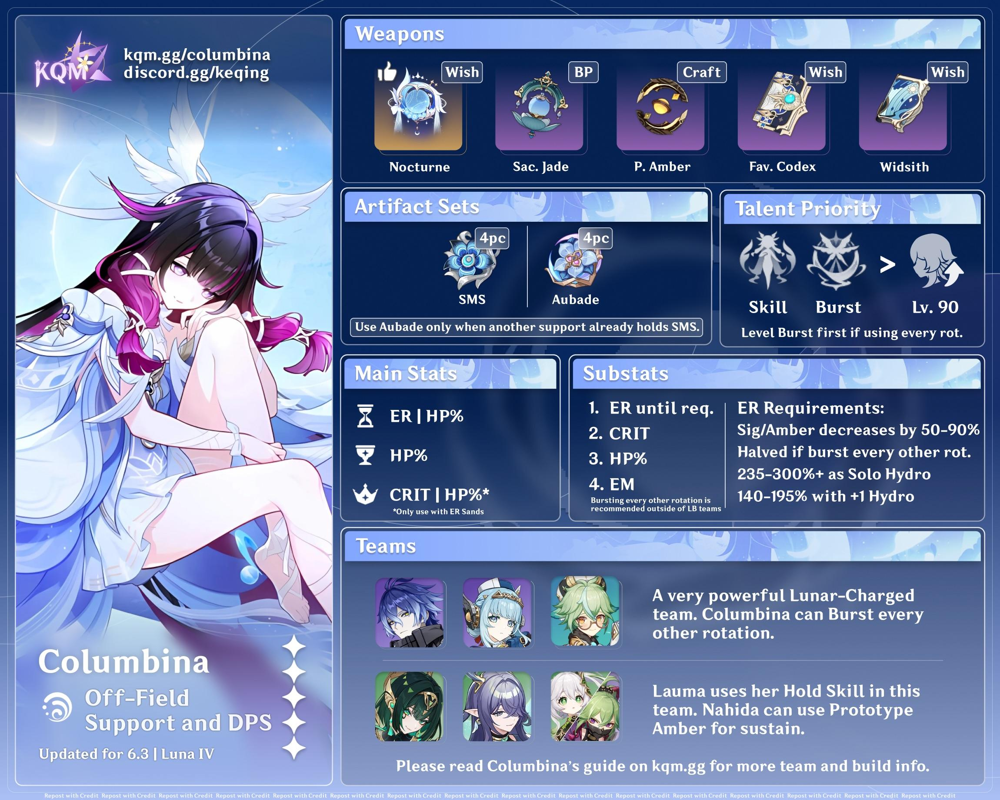
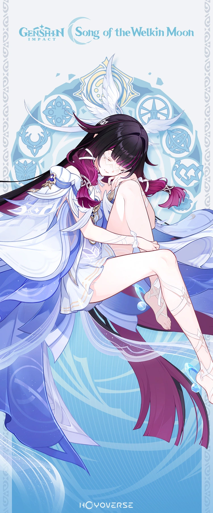

Columbina's Build

Columbina is a 5 star lunar-hydro support who boosts lunar DMG and constantly applies hydro to enemies, making it perfect for elemental reactions. She is also the archon of Nod-krai. She has a passive talent that also allows her to revive a fallen character in the Nod-Krai region. She is the number one needed character if you wanted a lunar team. Her skill provides hydro DMG/application based off of her max HP%. While it is active, it provides a significant boost to any lunar reaction. This skill can be used on or off field. Her ultimate further boosts DMG.

Main Affixes:
- CRIT DMG
- CRIT RATE
- HP%
- ER/EM (as needed)
Best Weapons
Finding the right weapon for Columbina can be a challenge, especially if you don't have enough primos to pull for her weapon! Sometimes even past character's weapons can also do the trick. Finding the right affix for the weapon can also be overwhelming, especially trying to figure out what the description of it means. Finding the right weapon is also different for each player depending on what you lack in artifacts. Some people may need more CRIT RATE, CRIT DMG, ATK% or even ER in some cases. Here's a list of her top 4 weapons:
- Nocturn's Curtain Call
- Relioquary of Truth
- Sacrificial Jade
- Prototype Amber
What Are more Weapons?
- Favonius Codex
- Surf's Up
- Tome of Eternal Flow
More information about Columbina's build can be found below:
Columbina Build